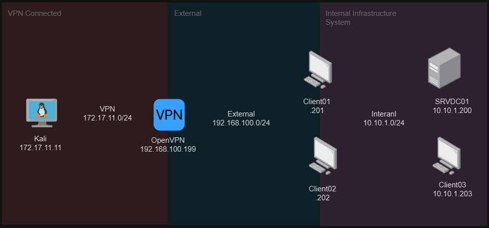

Network Topology
Overview
In my AD hacking lab, I have 3 zones which are internal infrastructrue system (internal - 10.10.1.0/24), External (192.168.100.0/24) and VPN (Openvpn connection - 172.17.11.0/24) that is connected to Tester System. I will show my detail implemention below.
Requirements
- VPN Server in Ubuntu Server or Client
- Windows 10 Pro for Client01 to 03
- SRVDC01 is a Windows Server 2019.
- Kali linux for Testing the whole system and network
SRVDC01 Set-Up
- Set up Active Directory Domain Services on a Windows Server 2016 or 2019.
- Define the domain name as bcit.lab during the promotion process
- Join client01 and 02 machines to the domain
- Create user accounts and groups in Active Directory Users and Computers.
- Configure password policies like complexity and expiration through Group Policy.
- Use Group Policy Objects to enforce security settings and configurations.
- Delegate specific permissions to users or groups as needed
Client01 Set-Up
- Install Windows 10 Pro
- Memory 2 GB minimum / Processor 2 / Hard Disk 60 GB
- Add 2 NAC one for internal and another for external
- Check the virus and thread producation and turn it on and dismiss all if needs.
- Add low level privillege user in my Client01 and logon as auto
- Install Remote Mouse 3.008 - Arbitrary Remote Command Execution for exploit low level accont
- Install Wise Care 365 5.6.7.568 - 'WiseBootAssistant' Unquoted Service Path for privilege escalation of Client01 Admin access.
- Install XAMPP server to see the default web page of client01
Client02 Set-Up
- Install Windows 10 Pro
- Memory 2 GB minimum / Processor 2 / Hard Disk 60 GB
- Add NAC for internal connection
- Check the virus and thread producation and turn it on and dismiss all if needs.
- Add low level privillege user in my Client02 and logon as auto
- Install Anviz CrossChex - Buffer Overflow (Metasploit)
- Install Microsoft Windows Kerberos - Privilege Escalation (MS14-068)
Client03 Set-Up
- Install Windows 10 Pro
- Memory 2 GB minimum / Processor 2 / Hard Disk 60 GB
- Add NAC for internal and directlly connected to SRVDC01
- Check the virus and thread producation and turn it on and dismiss all if needs.
- this time login as service level account in this machine
OpenVPN Server Set-Up
- Install Ubuntu Server or Client
- Memory 2 GB minimum / Processor 2 / Hard Disk 60 GB
- Add 2 NAC for internet access and directlly connected to External network
- Access Server Portal openvpn.com
- Connect openvpn from kali machine
Ready for Happy Hacking